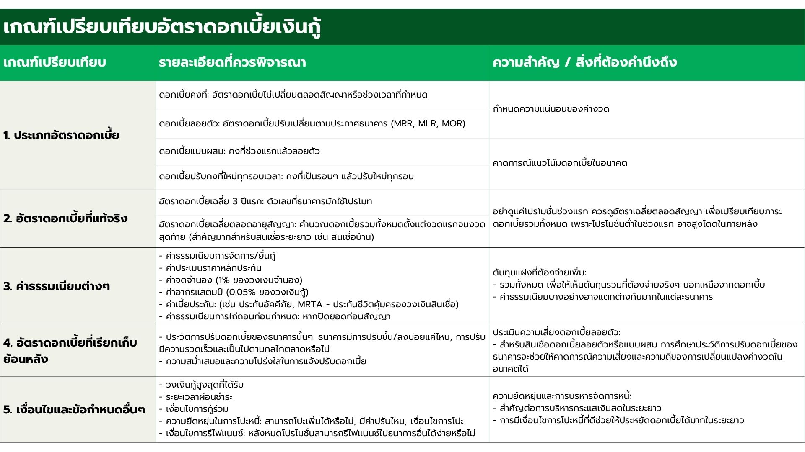

คู่มือทำความเข้าใจสินเชื่อบ้านแบบครบถ้วน
กู้บ้าน
บ้านเป็นอสังหาริมทรัพย์ประเภทหนึ่ง ซึ่งหมายถึงทรัพย์สินที่ไม่สามารถเคลื่อนย้ายได้ หรือเคลื่อนย้ายได้ยาก โดยทั่วไปจะหมายถึงที่ดินและสิ่งปลูกสร้างที่ติดอยู่กับที่ดินอย่างถาวร เช่น บ้าน อาคารพาณิชย์ หรือคอนโดมิเนียม
สินเชื่อบ้านคืออะไร?
สินเชื่อเพื่อที่อยู่อาศัย หรือ สินเชื่อบ้าน คือ เงินกู้ที่ทางสถาบันการเงินปล่อยให้สำหรับการซื้อ/สร้างที่อยู่อาศัย ในระยะยาว ซึ่งยาวนานตั้งแต่ 10 – 30 ปี หรือสูงสุดถึง 40 ปี เพื่อนำมาสร้างหรือซื้อบ้านที่เราต้องการ ซึ่งหมายรวมถึง อาคารพาณิชย์คอนโด ทาวโฮม และทาวเฮาส์ด้วย โดยจำนวนเงินที่ผู้ขอกู้จะได้ตามที่ธนาคารประเมินให้จะเรียกว่า “วงเงิน” และเมื่อถึงคราวที่ต้องชำระเงินคืน ก็จะมี “เงินต้น” หรือจำนวนเงินจริงๆ ที่ผู้กู้ยืมไป กับ “ดอกเบี้ย” หรือเงินส่วนที่ธนาคารคิดเพิ่มเติมที่ผู้กู้ต้องชำระเป็น “งวดๆ” ซึ่งโดยมากรอบงวด คือ ทุกๆ 1 เดือน ตลอด ระยะเวลากู้ โดยผู้กู้จะต้องนำที่อยู่อาศัยเป็นสิ่งค้ำประกันการจำนอง และหากคุณมีสินเชื่อบ้านอยู่แล้วแต่อยากเปลี่ยนไปกู้กับสถาบันการเงินใหม่ที่มีข้อเสนอที่ดีกว่า ก็สามารถทำการไถ่ถอนสินเชื่อเดิมที่มีอยู่และมาเข้ากับสถาบันการเงินใหม่ได้ เรียกวิธีการนี้ว่า “รีไฟแนนซ์บ้าน”

เงินกู้จากธนาคารหรือสถาบันการเงินสำหรับผู้ที่ต้องการซื้อที่อยู่อาศัย เช่น บ้านเดี่ยว ทาวน์โฮม คอนโดมิเนียม โดยมีการแบ่งประเภทดอกเบี้ยบ้านออกเป็น 4 ประเภทหลัก ได้แก่ อัตราดอกเบี้ยคงที่ อัตราดอกเบี้ยลอยตัว อัตราดอกเบี้ยปรับคงที่ใหม่ทุกรอบ และอัตราดอกเบี้ยแบบผสม เพื่อให้เข้าใจค่าใช้จ่ายดอกเบี้ยที่อาจเกิดขึ้น ผู้กู้ควรคำนวณดอกเบี้ยและเตรียมเอกสารให้ครบถ้วน นอกจากนี้ แต่ละธนาคารมีเงื่อนไขที่แตกต่างกัน จึงควรสอบถามเงื่อนไขให้ละเอียดก่อนทำการกู้
สินเชื่อบ้านแบ่งประเภทหลักๆ ได้ 5 ประเภทด้วยกัน
- สินเชื่อบ้าน ทาวน์เฮ้าส์ ห้องชุด อาคารพาณิชย์ พร้อมที่ดิน
- สินเชื่อเพื่อการปลูกสร้างที่อยู่อาศัยบนที่ดินของตนเอง
- สินเชื่อเพื่อการต่อเติม ปรับปรุง และตกแต่งที่อยู่อาศัย
- รับโอนลูกค้าสินเชื่อที่อยู่อาศัยจากธนาคารหรือสถาบันการเงินอื่น (Refinance)
- การกู้เพื่อซื้อที่ดินเปล่าไว้สำหรับการขยายที่อยู่อาศัยเดิมออกไปเพื่อความจำเป็นในการอยู่อาศัย
สินเชื่อบ้านแต่ละประเภท จะมีวงเงินกู้สูงสุด ระยะเวลาผ่อนชำระสูงสุด และอัตราดอกเบี้ย ที่ไม่เท่ากัน โครงการสินเชื่อแต่ละโครงการจะมีลักษณะที่โดดเด่นแตกต่างกัน เช่น เงื่อนไข โปรโมชั่น วิธีคิดอัตราดอกเบี้ย การลดหย่อนค่าธรรมเนียมบางประการ เป็นต้น ซึ่งคุณสามารถนำแต่ละโครงการมาเปรียบเทียบความคุ้มค่าได้เพราะฉะนั้น จำเป็นอย่างยิ่งที่ผู้สนใจกู้จะต้องศึกษาเงื่อนไขให้ครบถ้วนก่อนตัดสินใจกู้
หลักเกณฑ์การพิจารณาสินเชื่อของธนาคาร
ธนาคารพิจารณาสินเชื่อบ้านจากคุณสมบัติผู้ขอสินเชื่อ ความสามารถในการผ่อนชำระ และหลักประกันที่เหมาะสม โดยรายละเอียดประกอบด้วย:

ข้อควรรู้ก่อนขอสินเชื่อบ้าน